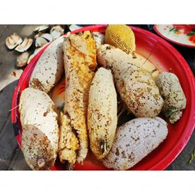
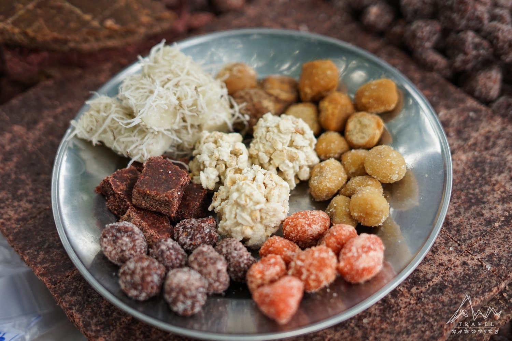
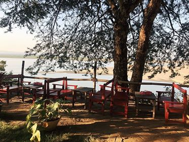

တူရွင်းတောင်ခြေက ပျားလပို့တွေ စားလို့အရမ်းကောင်းသူက
ပီကေဝါးသလိုပဲ အချိုတွေစုတ်ပြီး ဖယောင်းတွေကိုထွေးထုတ်ရတာ။ 🐝
 အလိုတော်ပြည့်ဘုရားက တန်ခိုးကြီးပြီးဆုတောင်းပြည့်တယ်လို့ လူတိုင်းသိကြတယ်။ အိမ်မှာဆို ပုဂံကအလိုတော်ပြည့်ဘုရား ဆင်းတုတော်ပူဇော်ထားတာ..... အလိုတော်ပြည့်ဘုရားရောက်ရင် ဇီးတော်ဖီ၊ ဇီးယို၊ မန်ကျည်းလုံး အစရှိတာတွေ ဝယ်လို့ရပါတယ်။ ရန်ကုန်ရောက်ရင် ထမင်းစားပြီး အချိုတည်းဖို့အတွက် အများကြီး ဝယ်လာလို့ရပါတယ်။ စျေးလည်းသက်သာတယ်။
 Fantasia Garden တဲ့ Upali Thein သွားတဲ့လမ်းဘေးကနေဝင်သွားရတာ။ အနားယူလို့ကောင်းတဲ့ ဆိုင်လေး….🤗🤗 ဆိုင်ထဲရောက်တာနဲ့ လုံးဝကိုစိတ်ချမ်းမြေ့ပြီး မပြန်ချင်ဖြစ်သွားလိမ့်မယ်...။ ဆိုင်သွားတဲ့ လမ်းတစ်လျှောက် လမ်းညွှန်ဆိုင်းဘုတ်လေးတွေ ပြပေးထားလို့ ရွာလမ်းလေးအတိုင်း ဝင်သွားရုံပါပဲ။ 🏜🛣 ဆိုင်လေးကဧရာဝတီမြစ်ကမ်းဘေးမှာရှိပြီး သစ်ပင်အရိပ်တွေနဲ့sunset တောင်ကြည့်လို့ရတယ်🌅🌄 ပြီးတော့ Boat Trip တွေလည်းစီစဉ်ပေးလို့ Boat စီးချင်ရင်လည်း အေးဆေးပဲ။ 🚣🚣 ဆိုင်ကို Local တော်တော်များများက သိပ်မသိကြလို့ Foreigner တွေအလာများတယ်။ ဆိုင်ပိုင်ရှင်ကလည်း Foreigner ပဲတဲ့…။ ရန်ကုန်ကဆိုင်တွေလို Decoration တွေအများကြီးဆင်ထားလို့ လှနေတာမဟုတ်ဘူး။ ဆိုင်က သဘာဝအတိုင်းကို လှပြီး ထိုင်ချင်စရာကောင်းနေတာ….🏜🏞 နေရာထိုင်ခင်းကအစ ထိုင်လို့ကောင်းတာမို့ အေးဆေး Chill ရုံပဲ။ တခြားဘီယာတို့၊ ကြာဇံကြော်တို့၊ အုန်းရည်တို့လည်း အစုံရတယ်။ ဘယ်လောက်လှပြီး အေးဆေးနားနေလို့ကောင်းလဲဆိုတာ

ပိုင်ထန်းတဲက အပြင်အဆင်လေးတွေကလေ အညာအငွေ့အသက်လေးတွေနဲ့ သိပ်ချစ်ဖို့ကောင်းတာပါပဲ ဧည့်သည်တွေအပေါ် အမြဲစေတနာထားတဲ့ ဘပိုင် ဘယ်လောက်စေတနာထားလဲဆို အဝတ်လဲဖို့ သနပ်ခါးလိမ်းဖို့ အခန်းလေးတွေလည်း ရှိတယ် စာဖတ်ခန်းလေးတွေလည်း ရှိတယ်
 ဇီးပင်ကြီးအောက် ဖျာလေးတွေခင်းပြီး အကြော်စားလို့ရပါတယ်
ဇီးပင်ကြီးအောက် ဖျာလေးတွေခင်းပြီး အကြော်စားလို့ရပါတယ်